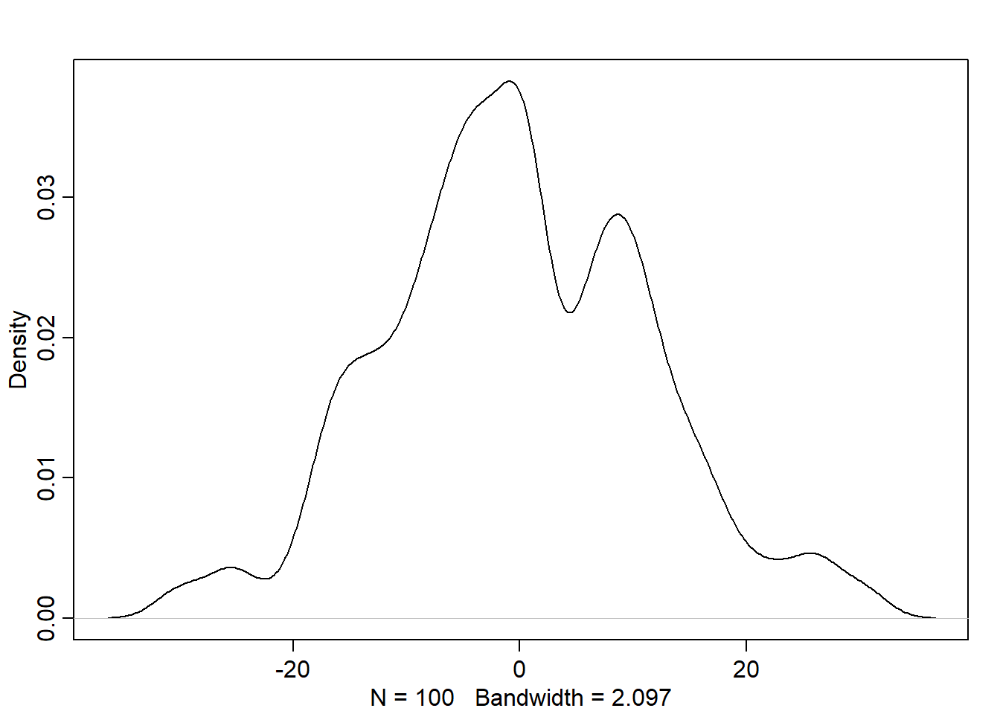
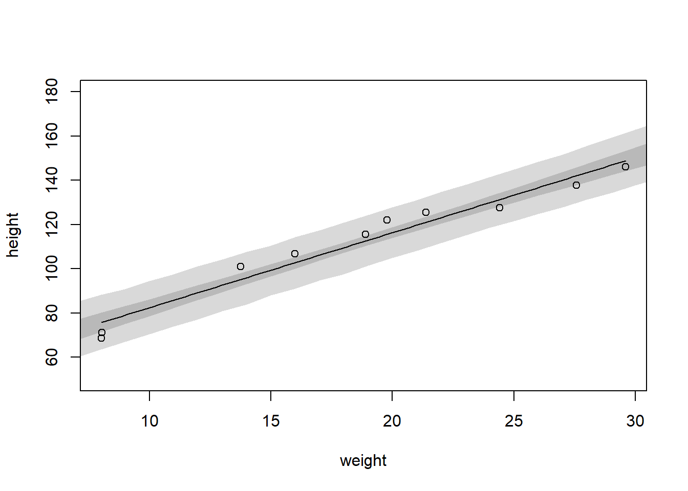
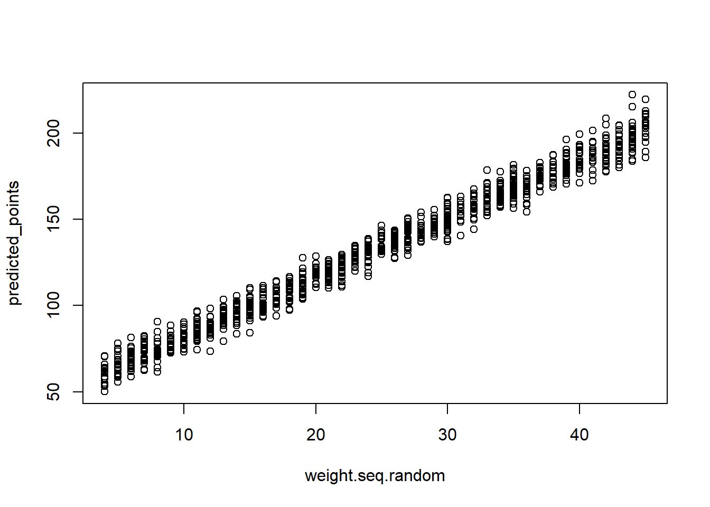
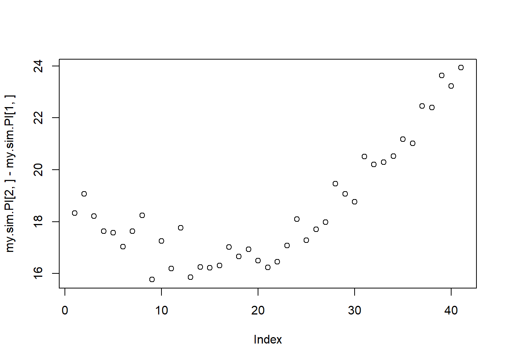
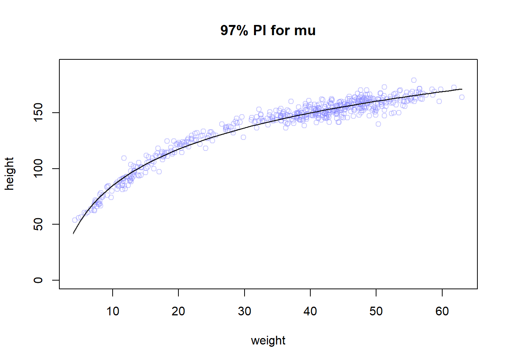
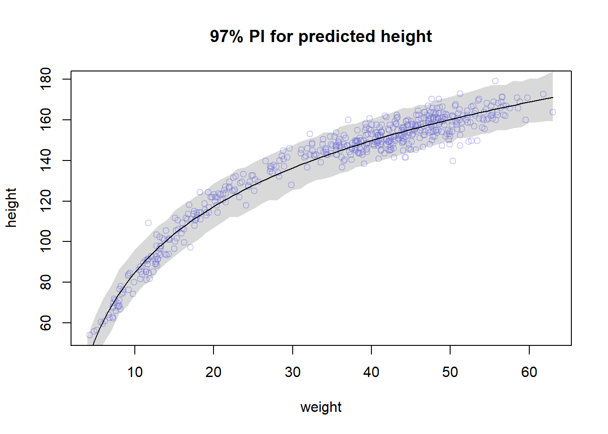

#I think this simulates from prior.
n <- 100
sigma <- rexp(n, 1)
mu <- rnorm(n, mean = 0, sd = 10)
y <- rnorm(n, mu, sigma) #we're only plugging in values drawn from our prior.
dens(y)
Vilgot Huhn
February 22, 2025
For the model definition below, simulate observed y values from the prior (not the posterior). \[ \begin{align} y_i &\sim Normal(µ,σ) \\ µ &\sim Normal(0,10) \\ σ &\sim Exponential(1) \end{align} \]
\[ \begin{align} y_i &\sim Normal(\mu_i,\sigma) \\ \mu_i &= a + b*x_i \\ a &\sim Normal(0,10) \\ b &\sim Uniform(0,1) \\ \sigma &\sim Exponential(1) \end{align} \]
flist <- alist(
y ~ dnorm( mu , sigma ),
mu <- a + b*x,
a ~ dnorm( 0 , 10 ),
b ~ dunif( 0 , 1 ),
sigma ~ dexp( 1 )
)The weights listed below were recorded in the!Kung census, but heights were not recorded for these individuals. Provide predicted heights and 89% intervals for each of these individuals. That is, fill in the table below, using model-based predictions.
t <- data.frame(individual = 1:5, weights = c(46.95,43.72,64.78,32.59,54.63), expected_height = rep(NA, times = 5), low_89_PI = rep(NA, times = 5), high_89_PI = rep(NA, times = 5),xbar = rep(NA, times = 5))
t individual weights expected_height low_89_PI high_89_PI xbar
1 1 46.95 NA NA NA NA
2 2 43.72 NA NA NA NA
3 3 64.78 NA NA NA NA
4 4 32.59 NA NA NA NA
5 5 54.63 NA NA NA NAdata(Howell1)
d <- Howell1
d <- d[d$age >= 18,]
xbar <- mean(d$weight)
mdl <- quap(
alist(
height ~ dnorm(mu, sigma),
mu <- a + b * (weight - xbar), #where is xbar defined? Must be part of quap built in?
a ~ dnorm( 178, 20),
b ~ dlnorm(0, 1),
sigma ~ dunif(0,50)
), data = d
)
precis(mdl) mean sd 5.5% 94.5%
a 154.6013573 0.27030758 154.1693536 155.0333610
b 0.9032811 0.04192362 0.8362791 0.9702831
sigma 5.0718795 0.19115465 4.7663774 5.3773815#post <- extract.samples( mdl )
#data <- c(46.95,43.72,64.78,32.59,54.63)
#for (i in data) {
# y <- rnorm( 1e5 , post$a + post$b*i , post$sigma )
#print(mean(y))
#print(HPDI(y,prob=0.89))
#}
post <- extract.samples(mdl, n = 1000)
t$expected_height <- apply(sim(mdl, data=list(weight=t$weights)),2, mean)
#I guess we could also do it by formula.
t$low_89_PI <- apply(sim(mdl, data=list(weight=t$weights)),2, PI)[1,]
t$high_89_PI <- apply(sim(mdl, data=list(weight=t$weights)),2, PI)[2,]
t individual weights expected_height low_89_PI high_89_PI xbar
1 1 46.95 156.2150 147.9285 164.0839 NA
2 2 43.72 153.2816 145.8356 162.1845 NA
3 3 64.78 172.6121 164.2527 180.4767 NA
4 4 32.59 143.3276 135.4016 151.6196 NA
5 5 54.63 162.8802 155.3697 171.1801 NAMats suggest we should do this manually too: i.e. don’t use link() or sim()
Select out all the rows in the Howell1 data with ages below 18 years of age. If you do it right, you should end up with a new data frame with 192 rows in it.
Answer: 27.18372#0.
data(Howell1)
d <- Howell1
d <- d[d$age < 18,]
#
d <- d[sample(1:nrow(d),size = 10),]
xbar <- mean(d$weight)
#1.
#challanging to chose priors for kids 0-18. I'm going with this. A tall 18 is 190cm. So half that.
#and I don't know what I'm talking about, so wide SD.
#I don't know enough to mess with the other priors but something positive so I'm keeping the dlnorm(0,10)
#and I don't know how close the relationship will be so model sigma between 0 and 10 seems fine
mdl2 <- quap(
alist(
height ~ dnorm(mu, sigma),
mu <- a + b * (weight - xbar),
a ~ dnorm( 95, 20),
b ~ dlnorm(0, 1),
sigma ~ dunif(0,10)
), data = d
)
precis(mdl2) mean sd 5.5% 94.5%
a 112.076281 1.5129022 109.658371 114.494191
b 3.393750 0.2158979 3.048704 3.738797
sigma 4.795944 1.0749938 3.077896 6.513992[1] 33.9375#2. plot MAP line and PI89
post <- extract.samples(mdl2)
weight.seq <- c(4:45)
mu <- link(mdl2, data=data.frame(weight=weight.seq))
mu.PI <- apply(mu,2,PI)
sim.heights <- sim(mdl2, data=data.frame(weight=weight.seq), post = post)
height.PI <- apply(sim.heights, 2, PI, prob = 0.97)
plot(height ~ weight, data = d, ylim = c(50,180)); curve(mean(post$a) + mean(post$b)*(x-xbar),add = TRUE); shade(mu.PI, weight.seq); shade(height.PI, weight.seq)
#My attempt at writing an own sim() function
#post are paired parameters drawn from the model.
weight.seq.random <- sample(weight.seq, size = 1000, replace = TRUE)
predicted_points <- rnorm(1000, mean = post$a + post$b*(weight.seq.random - xbar), sd = post$sigma)
plot(weight.seq.random, predicted_points) #don't know hot to get a PI here
#seems the errors should propagate but it's not easy to see visually
#second attempt. my own sim for prediction intervals
n <- 1000
s <- c(5:45)
post <- rethinking::extract.samples(mdl2, n = n)
d2f <- matrix(nrow = n, ncol = 0)
for(i in s){
d2f <- cbind(d2f,rnorm(n, mean = post$a + post$b*(s[1+i-min(s)] - xbar), sd = post$sigma))
} #super dumb for loop man...
my.sim.PI <- apply(d2f,2,PI)
plot(my.sim.PI[2,] - my.sim.PI[1,])
Answer 3: I’d be concerned about how far off the MAP-line is from the data-points, especially in the middle. The relationship looks non-linear.
Suppose a colleague of yours, who works on allometry, glances at the practice problems just above. Your colleague exclaims, “That’s silly. Everyone knows that it’s only the logarithm of body weight that scales with height!” Let’s take your colleague’s advice and see what happens.
Model the relationship between height(cm)and the natural logarithm of weight(log-kg). Use the entire Howell1 data frame, all 544 rows, adults and non-adults. Fit this model, using quadratic approximation: \[ \begin{align} h_i &∼ Normal(µ_i,σ) \\ µ_i &= α+βlog(w_i) \\ α &∼Normal(178,20) \\ β &∼Log−Normal(0,1) \\ σ &∼Uniform(0,50) \end{align} \] where \(h_i\) is the height of individual i and wi is the weight (in kg) of individual i. The function for computing a natural log in R is just log. Can you interpret the resulting estimates?
Begin with this plot:
data("Howell1")
d <- Howell1
mdl3 <- quap(
alist(
height ~ dnorm(mu, sigma),
mu <- a + b * log(weight),#note that we're not doing "- mean(weight)" now, it wasn't in the formula for some reason.
a ~ dnorm( 178, 20),
b ~ dlnorm(0, 1),
sigma ~ dunif(0,10)
), data = d)
precis(mdl3) mean sd 5.5% 94.5%
a -22.871048 1.3343316 -25.003568 -20.73853
b 46.816794 0.3823358 46.205748 47.42784
sigma 5.137211 0.1558943 4.888062 5.38636post <- extract.samples(mdl3) #using samples from the posterior (1)
weight.seq <- c(4:63)
mu <- link(mdl3, data=data.frame(weight=weight.seq))
mu.mean <- apply(mu,2,mean)
mu.PI <- apply(mu,2,PI, prob = 0.97)
sim.heights <- sim(mdl3, data=data.frame(weight=weight.seq))
height.PI <- apply(sim.heights, 2, PI, prob = 0.97)
plot(height ~ weight , data=Howell1 ,
col=col.alpha(rangi2,0.4), main = "97% PI for mu", ylim = c(0,190) ); lines(weight.seq,mu.mean); shade(mu.PI, weight.seq)
#but it's actually cooler to do it with curve actually...
plot(height ~ weight , data=Howell1 , col=col.alpha(rangi2,0.4), main = "97% PI for predicted height" ); curve(mean(post$a) + mean(post$b) * log(x), add = TRUE); shade(height.PI, weight.seq)
Then use samples from the quadratic approximate posterior of the model in (a) to superimpose on the plot: (1) the predicted mean height as a function of weight, (2) the 97% interval for the mean, and (3) the 97% interval for predicted heights.